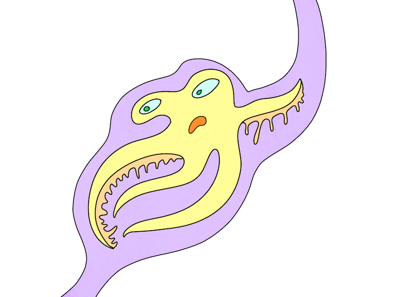
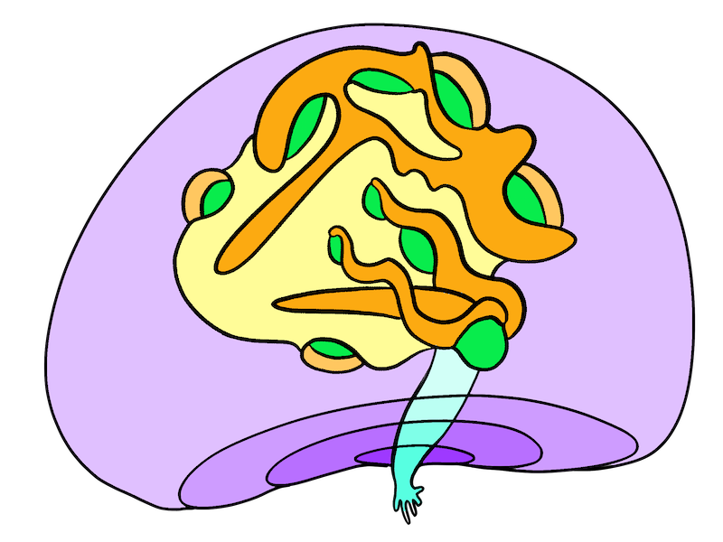

Stuck
I'm stuck.
I’m in the middle of a tangle, a knot. I keep hoping I’ll have a dramatic breakthrough and escape this moment. It’s terrifying to write from here, from the middle of the mess.
But I’ve decided to write from here. Maybe you are stuck too? Maybe you’ll read this and feel less alone? Maybe it’s even a little funny?
I’m stuck artistically
I’ve lost the pull of my artistic vision. That magic current that pulls me onwards, uncontrollably, irresistibly into an otherworldly place. Forget the current, I’m not even in the shallows. I’m washed up on the bank like a gasping fish, surrounded by rotting algae and grimy plastic bags. I can’t imagine what I ever saw in this idea.
I’m stuck technically
I code, but it’s not easy. I live in a different world. My world is all movement and things only exist relationally. Every time I need to learn new terminology, every time I need to learn where to click in a series of grey boxes or what specific punctuation I need to use to make the sand think — I have to break my own brain to make it stick. And it sticks poorly, like chewing gum holding in a fake tooth.
I’m stuck temporally
I’m working on too many things. I’m working with incredible people who rely on me, pay me, trust me, delight me, and ask me to do clear, creative, exciting things. I can’t leave any of these projects, I love them. And worse, sometimes I add new things to the stack. I’ve said no to a handful of incredible projects recently, but a few times I’ve said yes. When I carve away time for all the meetings, all the tasks, and all the regular life maintenance, it’s a daily struggle to preserve my sacred personal art hours.
I’m stuck physically
I don’t want COVID (again?). I have challenges with my immune system (it gets very excited about visitors) and COVID would not be a friendly visitor. And I’m currently writing from bed, where I am managing an unreasonable amount of pain. This is not new. I have a lot of challenges related to my body. But I am literally trapped here, making it impossible to go into the office with the equipment I need for this work.

I’m stuck logistically
The command line tool at the heart of this project simply doesn’t work with my machine. I need a Linux machine with an NVIDIA 2000 GPU (16XX would work). Using the machine I have is impossible. Also, for this project, I’m using Unity, even though 50% of my being is vehemently opposed. So the entire time I’ve been working, I’m also fighting against myself. I’m never certain I’ll keep using the tools I’m using. It’s like trying to swim with one foot firmly on shore.
I’m stuck emotionally
I feel tired, I feel bad. This is not new. I’m an expert. Yes, I’ve tried not feeling this way anymore. Yes, I’ve tried drinking more water, changing my diet, exercising, sleeping, gratitude journals, 10-day silent meditation retreats, therapy, and pharmaceuticals. I just need to keep all systems running and just wait it out.
So I’m stuck
If I was stuck in one way, I’d just wiggle to the side a bit and work on something else. If I was having problems choosing my tools, I’d shift over to paper prototypes and think about design instead. If I was stuck artistically and creatively, I’d follow a technical tutorial. But all these dimensions of stuck have knotted together into a mobius knot of stuck. It’s the kind of stuck that loops into dimensions that I didn’t even know existed.
I can just get a fraction of a hair's width of space I’ll wiggle things around and get out of this mess. Or maybe you’ll find me mummified here. You’ll say, I read that post about being stuck when it first happened and DID YOU KNOW? MARIE NEVER MADE IT OUT.